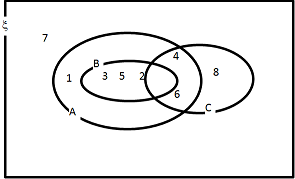
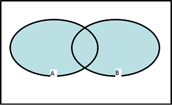
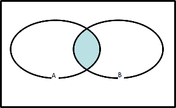
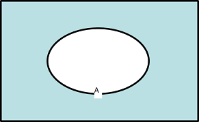
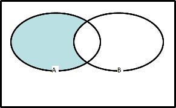

Sets Theory
- A set is a well defined group of items
- Sets are made up of ‘elements’ e.g. The set of students at LIBT
- Venn diagrams
- A={1,2,3,4,5,6},B={2,3,5},C={2,4,6,8}
- 
- Enumerated form:
- Positive even numbers <10 : {2,4,6,8}
- Positive even nos. <=50 : {2,4,6,8,…,50}
- Positive even numbers : {2,4,6,8,…}
- Prime numbers <20 :{2,3,5,7,11,13,17,19}
- Predicate form
- {x | x is even and 0 < x <= 50}
- {x | P(x)}
- Special Sets:
- N (the natural numbers) = {1,2,3,4,…}
- Z (the integers) ={…,-3,-2,-1,0,1,2,3,…}
- R is the set of real numbers – any number which can be written in decimal expansion e.g., 3.234
- The null (sometimes called the empty set): Ø or in enumerated form { }
- The universal set: ξ
- The set of all people in the world maybe the universal set if we are analysing population studies
- The set of points on a line may be the universal set if we are talking about geometry
- Membership
- For the set A = {3,2}
- When an element is a member of set, the notation would be: 3 ∈ A, 2 ∈ A
- When an element is not a member of set, the notation would be: 6 ∉ A, 5 ∉ A
- This is the formal notation, rather than the English language equivalent
- Sets cannot contain repeated elements, i.e. A = {3,3,2} is invalid
- Sets can also contain other data types, e.g. strings
- Not normal to mix types in a set
- Subsets
- Two sets A and B; B is defined as a subset of A (represented B ⊆ A), when all elements of B are also elements in A.
- Example: A = {1,2,3,4,5,6}, B = {2,3,5}, C = {2,4,6,8}
- B ⊆ A, but 8 ∈ C, but 8 ∉ A, so C is not a subset of A
- Implications:
- Notice that N ⊆ Z ⊆ R
- If s = Ø and t = Ø then s = t
- For any set A, A ⊆ A and Ø ⊆ A
- If S ⊆ T and T ⊆ S, then S = T
- Proper Subset:
- B is a proper subset of A if:
- B ⊆ A and B ≠ A
- Example: A = {1,3,5,7} and B = {1,3,5} then B is a proper subset of A
- Cardinality
- Cardinality is the number of elements in the set A, may denoted by n(A), A, or # A.
- A = {1,2,3,4,5}, n(A) = 5
- B = {2,4,6,…,20}, n(B) = 10
- If P ⊆ Q, then n(P) ≤ n(Q)
- Powerset
- Powerset of set S consists of all the subsets of set S
- Powerset of {1, 3} -> {{ }, {1}, {3}, {1,3}}
- We denote the powerset of S as: P (S)
- There are 4 operators for sets:
- Union A ∪ B
- A ∪ B = {x | x ∈ A or x ∈ B}
- 
- Intersection A ∩ B
- A ∩ B = {x | x ∈ A and x ∈ B}
- 
- Complement ¬A (sometimes Ā)
- ¬A = {x | x ∈ ξ and x ∈A}
- 
- Difference A – B (sometimes A \ B)
- A - B = {x | x ∈ A and x ∈ B}
- 
- The fundamental Laws of Sets
- Double complement law
- Idempotent law
- Commutative law
- A ∩ B = B ∩ A
- A ∪ B = B ∪ A
- Associative laws
- (A ∩ B) ∩ C = A ∩ (B ∩ C)
- (A ∪ B) ∪ C = A ∪ (B ∪ C)
- Distributive Laws
- A ∩ (B ∪ C) = (A ∩ B) ∪ (A ∩ C)
- A ∪ (B ∩ C) = (A ∪ B) ∩ (A ∪ C)
- Identity laws
- Annihilation laws
- Inverse laws
- Set theory is the key mathematical tool for making arguments and reasoning about objects and their relationships to each other (Relations & Functions).
- We will be using sets to define other structures in this course – Graphs, Finite State Machines etc and use set properties to reason about their type and behaviour.
- Formal specification of programs
- Descriptions of programs that can be mathematically proven to be correct
Sets Theory
Some Book
- Mathematics: From the Birth of Numbers – Jan Gullberg
- Discrete Mathematics with Applications – Susanna S Epp
- Using Z : Specification, Refinement and Proof – J C P Woodcock
- Schaum's Outline of Discrete Mathematics – Lipschutz and Lipson
- Foundations of Discrete Mathematics – Polimeni and Straight